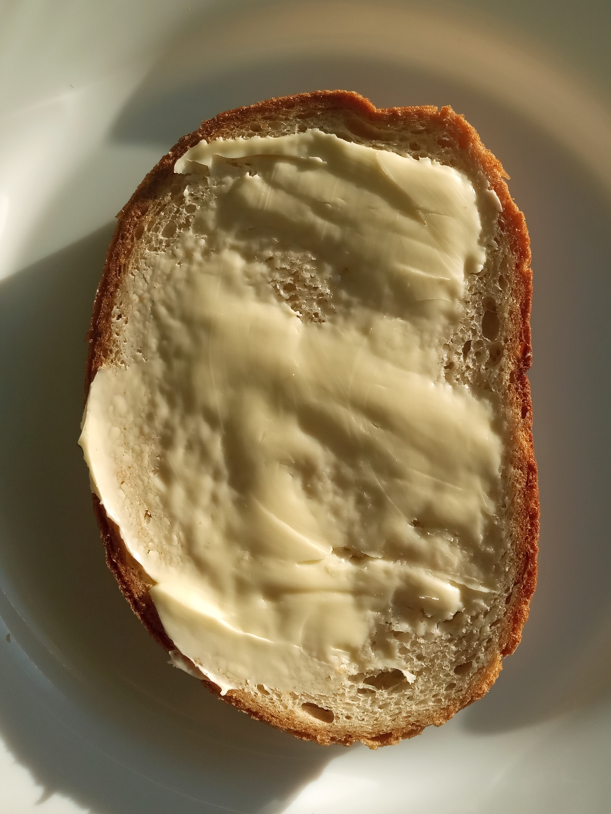

Smørrebrød

Description
Very basic Scandinavian meal. Literally butter and bread.
Ingredients
- Bread (not stale)
- Butter
- Toppings (optional)
Steps
- Cut the bread if not cut already
- Spread the butter on bread slices (it is preferrable to use only one side of the bread slice)
- Add toppings